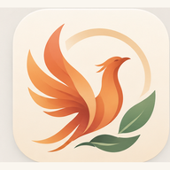

Dashboard alimentare
Il tuo percorso per rinascere come una fenice, ogni giorno.
SETTIMANA
7–13 settembre
OGGI
Calorie consumate
—
/ 1450 kcal
Seleziona le alternative
Proteine
— g
— · target 21%
Carboidrati
— g
— · target 50%
Grassi
— g
— · target 29%
Fibre
— g
/ 30 g
Pane di oggi
Quantità consigliata: 70 g
I TUOI PASTI
Verdure di stagione
Scegli tra quelle di stagione e usa la quantità prevista nel pasto.
Peso e misure
Puoi lasciare vuoti i campi che non vuoi misurare. Per confronti utili, prendi le circonferenze sempre nello stesso punto e in condizioni simili.
Andamento peso (kg)
Rilevazioni
Nessuna rilevazione ancora salvata.
| Data | kg | Vita | Addome | Fianchi | Coscia | Braccio | Torace |
|---|
Lista della spesa
Si aggiorna automaticamente in base alle alternative scelte nella settimana selezionata.
0/33settimana selezionata
Il sabato sera viene conteggiata automaticamente una pizza margherita da 210 g al posto della cena standard. La domenica viene escluso dalla spesa il pasto libero scelto qui.
Come usare “verdure stagionali miste”
ZucchineMelanzanePeperoni
FagioliniBietoleSpinaci
RucolaRadicchioZuccaFinocchi
La quantità totale viene calcolata dai pasti selezionati; puoi distribuirla tra queste verdure in base a stagione e tolleranza.